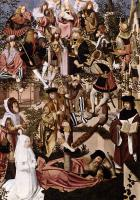

| Воскресіння Лазаря
1480
|
 | Поклоніння волхвів
1480-85
|
| Святий Баво
1480
| |
|  | Древо Єссея
1480
|
 | Діва з немовлям
1480
|
 | Різдво, вночі
1484-90
|
 | Мощі св. Івана Хрестителя
1485
|
 | Оплакування померлого Христа
1485
|
 | Свята рідня
1485-95
|
 | Поклоніння королів
1490
|
| Іван Хреститель в пустелі
1490-95
| |
 | Людина Скорботи
1495
|
 | Діва з немовлям
|
 | Розп'яття
|